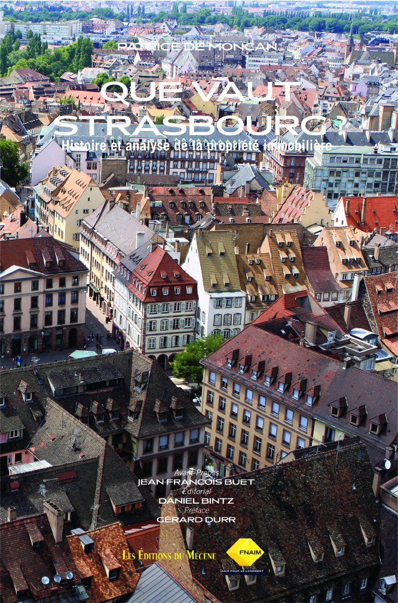

03 · Catalogue
Paris · ville · scène · patrimoine · art de vivre
Une bibliothèque de traces.
Quelques titres emblématiques parmi un catalogue qui traverse l’histoire de Paris, l’architecture, les institutions, la scène et le patrimoine.

paris
Le Paris d’Haussmann
Patrice de Moncan

paris
Charles Marville
Paris photographié

paris
Les Passages de Paris
Patrimoine parisien

ville
Villes rêvées
Urbanisme & utopies

paris
Les Jardins du baron Haussmann
Paris & paysage

paris
Paris en incendie
Histoire de Paris

scene
Rudolf Noureev
CNCS · scène

scene
L’Opéra russe
Grand Prix du Livre d’Art

art
Objets de passion
Collection

patrimoine
Le Palais de l’Élysée
Institution

ville
Que vaut Strasbourg ?
Économie urbaine

art
Une Histoire Amoureuse du Vin
À paraître · 2026